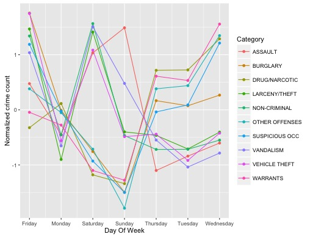
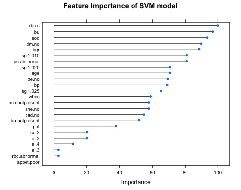

| Shruti Marwaha |
Data Science Projects:
Kaggle Challenge - San Francisco Crime Classification:
 Chronic Kidney Disease Prediction:
 |
Visitor Count:
Questions? Contact:Shruti Marwaha,
Department of Molecular & Cellular Physiology,
University of Cincinnati.